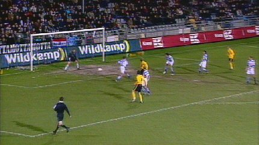
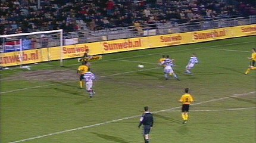
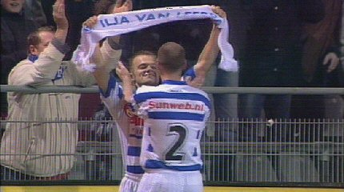
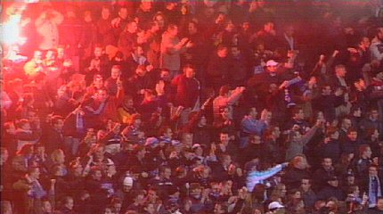
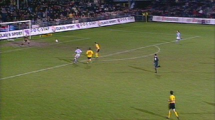

|
De Graafschap - Roda JC (2-0) 22 januari 2005 |
De
Graafschap - Roda JC (2-0) 22 januari 2005

Kans voor Kone.

In de 80e min. scoort Van Leerdam 1-0.

Zo waar een eigen sjaal!

Graafschapsupporters vieren feest.

De ellende voor Roda wordt nog groter wanneer Van Beukering in de
extra
tijd 2-0 scoort.
Alweer verliest Roda van een laaggeklasseerde ploeg en zet zich
daar niet
alleen mee voor schut, maar verprutst onderwijl een unieke kans om aan te
sluiten bij de subtop.
© Koempels Pleasure Dome